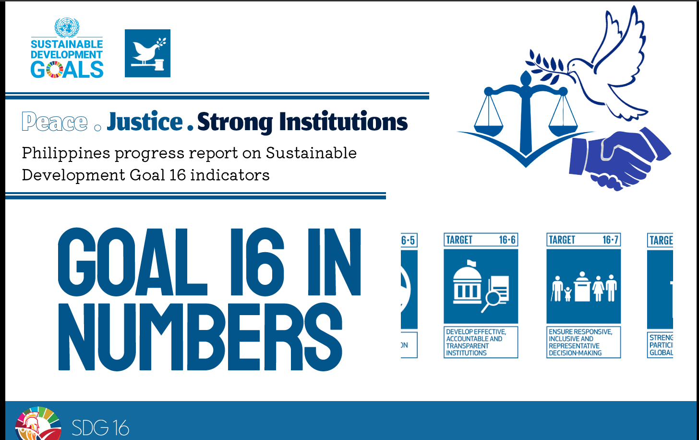

"Kampon ni Mawe", a group name of one of the participants in Techno SDG Exposition, proposed a news website dedicated to empowering and fully supporting Sustainable Development Goal No. 16, Promoting Peace, Justice, and Strong Institutions, through the perspective of informed, engaged, and responsible students of the Red and White Community. By highlighting and disseminating information on issues related to governance, human rights, social justice, and sustainable goals, this platform aims to raise awareness and empower students to advocate for positive change. Through this engagement, "Kampon ni Mawe" aspires to contribute to building a society where informed citizens can hold institutions accountable and drive progress toward a fair and peaceful world. Reflecting Batangas State University TNEU's mission and vision of shaping future leaders who embody the spirit of nationhood, ready to engage with the world for sustainable development.
Awardees: Ashera Kathryn R. Aguilar| Jello Mari Garcia | Jhon Kyle P. Ilao

3rd Placer in UI/UX SDG Challenge, Spookython 2023